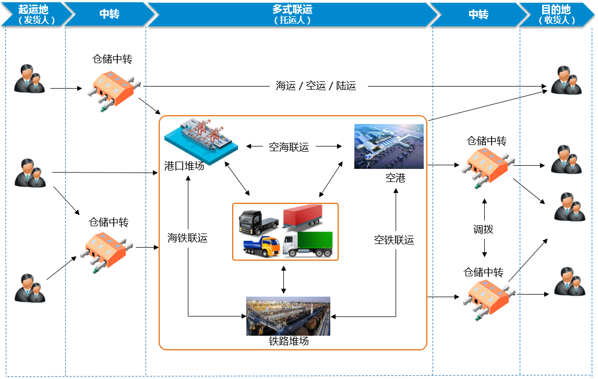

多式联运是运输全程中采用至少使用两种不同运输方式连续作业将货物从起运地运到目的地的物流过程。多式联运由托运人委托经营人来组织完成的，无论涉及几种运输方式，分为几个运输区段，由多式联运经营人对货运全程负责。发货人与多式联运经营人（下文中称托运人）签订多式联运合同，以多种不同的运输方式，由托运人将货物从接管地点运至指定交付地点的货物运输。多式联运适用于水路、公路、铁路和航空多种运输方式。
多式联运在物流行业很常见，从大型的综合物流运输过程到身边的快递服务，都是通过采用多种运输方式来提供服务。
多式联运运营模式分析如下：

4PNT多式联运物流运营管理信息化方案综合分析多式联运的运营模式，可分别管理铁路运输、航空运输、长途海运、公路运输，结合多式联运的特点，配套中转仓管理、集卡运输。各环节既能独立作业又能协同作业，提供完整端到端的多式联运以及配套服务。